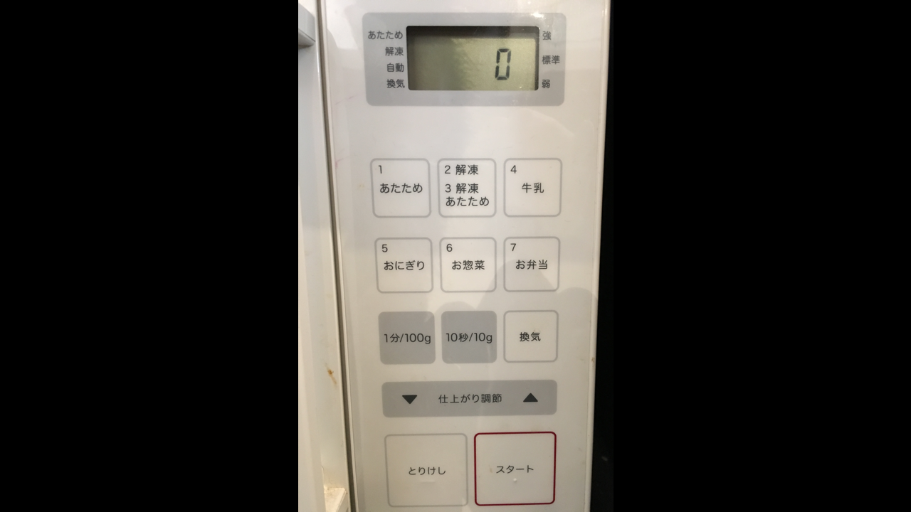
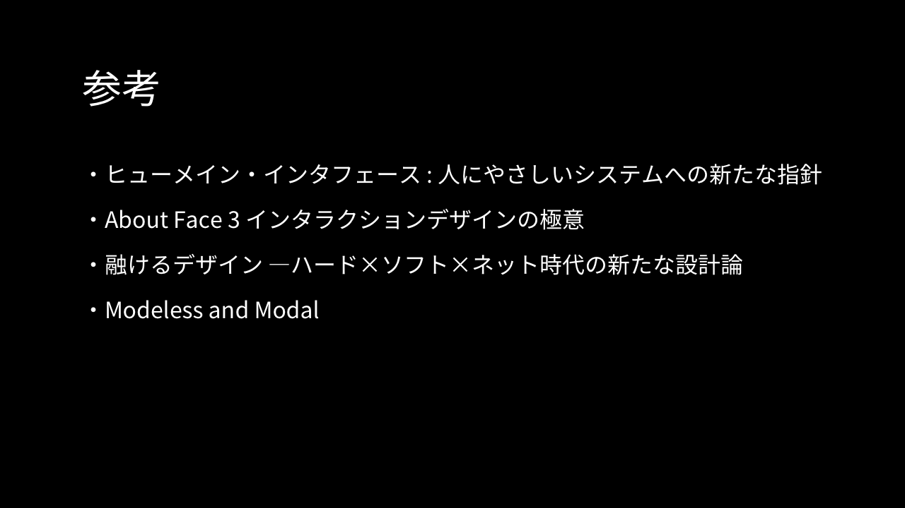

-

- ユーザー自身の道具とはどういうことなのかというと、大抵の道具というのはまずユーザー自身が主体的に利用できるようになっているべきだと思います
- 対して現状としては、提供側がユーザーの行動を主導するという意識が強く出てしまっているデザインが世の中の至るところに蔓延しているように感じます
-

- これはこの後ろにある電子レンジです
- 僕はこの電子レンジをよく使うんですが、最初のころは毎回操作に迷ってスムーズに使えないということがよくありました
- 物を入れてボタンを押すだけだと思われるかもしれないんですが、実はこの電子レンジは人にとってかなり不自然な操作を要求してきます
-

- まずはこのボタンが集まってる部分を見てみて下さい
- 上の方に「あたため」「解凍」「牛乳」「おにぎり」というようなボタンがあって、その下に「1分/100g」「10秒/10g」「換気」「仕上がり調整」、そして一番下に「とりけし」「スタート」というボタンがあります
- 僕がこれを初めて使ってみたときの行動は、買ってきたパンをとりあえず温められればいいと思って、レンジの中にパンを入れて最初に目に入った「スタート」ボタンを押すという感じだったんですが
- 電子レンジは回り始めず、特に音が鳴ったりもしませんでした
- 何の反応もなかったので電気が通っていないのかと思ったんですが、ディスプレイに文字が表示されているのでそういうことではなさそうでした
- よく考えると、電子レンジを回すときには時間を指定しないといけないなと気づいたので、次に「10秒/10g」というボタンを押してみました
- ただ、それでもやっぱり反応がありません
- もしかしたら壊れているのかもしれないと思ったんですが、僕の前に使っている人がいたので操作方法が間違っているのだろうということはわかりました
- そこでもう少しよく観察してみると、ボタンの並び順に沿って上から順に項目を選択していく必要があるのだと気づきました
-

- まず初めに温め方法を選択して、次に時間を指定してから、スタートボタンを押すという順番に沿って操作しないと動かないようでした
- これはGUIでいうとウィザード的な操作です
-

- 画面が2画面に分かれていて、最初の画面で温め方法を選択すると次の画面に遷移する
- 時間を指定してからスタートを押すことで温めが開始される、という感じです
- この電子レンジがこのようなGUIの画面であれば一応使えはするはずです
- なぜかというと少なくとも操作に順番があるということは強制的に意識させられるからです
- ウィザード的な画面になっていれば、温め方法より先に時間を指定したりスタートボタンを押すことはあり得ません
- ですがこれが良いUIであるとも思えません
- というのは、そもそもユーザーにとってはシステムの都合に合わせた順番で操作をする意味がないからです
-

- 出典: IMB-T174-5（50Hz）・IMB-T174-6（60Hz）電子レンジ 17L ターンテーブル｜調理家電｜アイリスオーヤマ
- 良いUIとは、例えばこのようになっているべきです
- 先ほどの電子レンジに大量のボタンがついていたのに対して、この電子レンジにはアナログな、ぜんまいネジがふたつついているだけです
- たぶんこの場にいる全員が、この電子レンジの使い方なら予測できるでしょうし、仮にわからなくてもすぐに学習できるはずです
- レンジに温めたいものを入れて下のネジを回すだけです
- ほとんどの場合は上のネジには触れる必要もありません
- じゃあ、どうして最初の電子レンジの使い方はわかりにくくて、この電子レンジの使い方はわかりやすいのかというと
- これにはUIデザインの用語でいうところの「モード」という概念が関係しています
-

- モードというのはシステムが特定の機能の使用に制限された状態を指します
- 例えば前者の電子レンジは、最初は温め方法だけを選択するモードに入っています
- このモードに入っている間は、温め秒数を指定したり温めをスタートすることができません
- UIからはこうしたモードが取り除かれているほど、ユーザーにとって予測しやすく、学習しやすく、創造的に使えるようになります
- 逆にこのモードが存在することで、間違いや混乱、不必要な制限や複雑さを生み出してしまいます
- モードという言葉の意味を言い換えると、UIの状態によってユーザーの操作の意味が変わってしまうこととも言えます
-

- この電子レンジでは温め方法を選択すると、時間を指定するモードにステップが移ります
- すると、最初は時間を入力するボタンが押せませんでしたが、このステップでは入力できるようになります
- ユーザーがこの電子レンジを使えるようになるためには、まずシステムにこうしたモードが存在することを知った上で
- 今はどのモードに入っているのか、モードによって異なる振る舞いは何か、逆に共通した振る舞いは何か
- ということを実験する必要があります
- そして、モードがある限りユーザーはモードを意識し続けなければうまく操作できません
- モードによって振る舞いに一貫性がなくなることによって、このようにユーザーの予測や学習が難しくなり、認知的な負荷が高まり、操作にストレスを感じたり、操作を断念してしまうことに繋がります
- こうした理由から、UIデザインの原則としてモードは極力排除すべきです
-

- こうしたモードが存在することをモーダルであると言い、モードが存在しないことをモードレスであると言います
- 最初の電子レンジの操作がわかりにくいのはモーダルだからであって、後者の電子レンジの操作がわかりやすいのはモードレスだからです
- モードレスという原理を説明するために、ここで後者のモードレスな電子レンジについて詳しく見てみます
-

- この電子レンジの特徴は2つあります
- 1つ目は、両方のぜんまいネジをいつでも回すことができて、電子レンジの状態が常に、ぜんまいネジと同期されていること
- 2つ目は、電子レンジの状態が常に明確にフィードバックされていることです
- モーダルな電子レンジでは温め方法の選択をするために、決められた手順を求められましたが、この電子レンジではいつでもワット数を変更できます
- 例えば先にタイマーを回してからワット数を強めてもいいですし、前回と同じワット数でよければ操作をひとつ省略できます
- 例えばタイマーを回した後に、温めの途中で温め時間が足りなさそうだと思ったら、そのまま余分にネジを回せばよいだけです
- モードレスであるということはわかりやすいだけでなく、ユーザーが自由自在に使えるということにも繋がります
- さらにこのタイマーの意味は、リアルタイム性という言葉でも説明ができます
- 下のぜんまいネジはタイマー機能と実行機能を兼ねていますが、これによって電子レンジから実行待ちという状態を取り除いています
- というのは、実行待ちという状態は現実世界と比べると不自然な状態で、例えば紙にペンで文字を書くときには、書いた結果は常に目の前に現れていて、書いた内容を確定するというタスクは存在しません
- そのため、こうしたリアルタイム性をUIに実装できると自然な操作感を実現できます
-

- 例えば、デスクトップの壁紙選択では、Windowsでは画像の選択後に確定するタスクがありますが
- Macでは選択した瞬間に壁紙が切り替わって自動的に保存されています
- このようなインタラクションはAppleの製品でよく見られます
- というわけで、電子レンジのデザインを通してモードという言葉の概要を説明しました
-
- さて、こうしてUIデザインを追求する目的のひとつがフローです
- なにか作業に夢中になっていて、気がついたら思いもしないほど時間が過ぎていた、みたいなことをフロー状態と言います
- フロー状態に入っていると人は穏やかな幸福感を感じて、時間が過ぎるのを忘れて、そしてとても生産的になるそうです
- つまりUIデザイナーとしてユーザーを幸せにして生産性を上げるためには
- フローに入りやすいようにデザインしなければならないし、フローを妨げる要因は排除しなければならないということです
- こうしたフローの感覚を作り出すためには、UIは透明になることを求められます
-
- 例えば、僕たちがマウスカーソルを操作しているとき、意識しているのはカーソルでなくてカーソルが触れる対象だそうです
- つまり意識の上ではカーソルは透明になっています
- ですが、普通に操作しているときは透明になっているのに、カーソルが意識される瞬間があります
- それは、マウスの充電が弱っていたりして、カーソルの動きがマウスと連動せずに遅延したりしたときなんかには
- カーソルが意識に上ってくるのだそうです、つまり透明でなくなるということです
- こういったことがフロー状態を妨げてしまう要因になります
-

- ところで、僕たち制作者が、ユーザーが夢中になるようなものを作りたいというとき、よく「没入感を演出したい」というようなキーワードが出ることがあると思います
- すると大抵、没入感のために、強制的に動画をフルスクリーンで表示させたり、スクロールハイジャックを実装してみたりと
- いわばモーダルな体験を作り出したいという話になります
-

- 出典: オブジェクトベースとタスクベース – Atochotto
- モーダルな体験というのはつまりユーザーを特定のタスクで束縛しているのだと思います
- ユーザーのコンテンツとの関わり方を制作者が勝手に決めてしまって
- 本当に提供したいはずのコンテンツそのものよりも、コンテンツとの関わり方を前に出してしまっているように感じます
- ユーザーが夢中になるものを作ることは、ユーザーの行動を制限することでなく、ユーザーを制限から解放することで実現するべきだと僕は考えています
-
